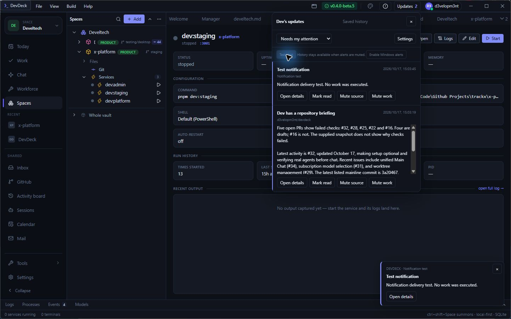
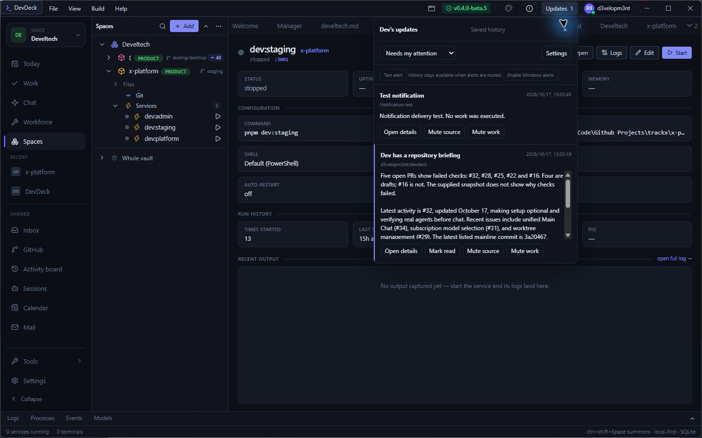
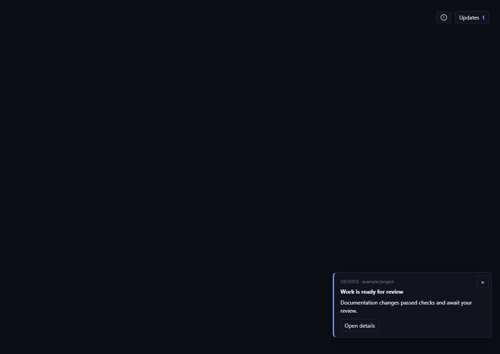
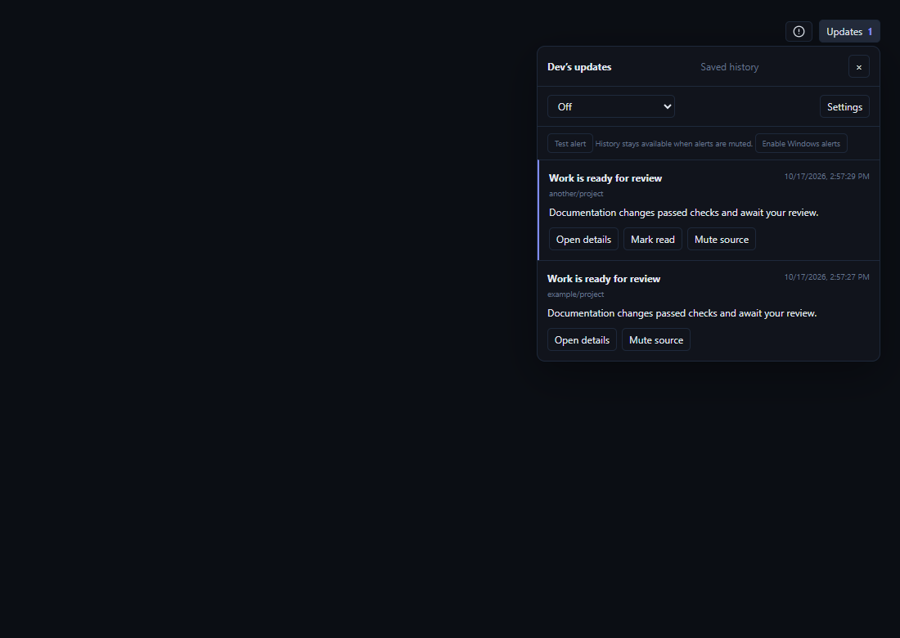
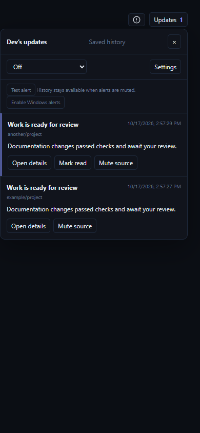

17 October 2026. Domain events → background event-log writer → SQLite notification history → desktop alert / centre and paired-phone snapshot.
| Check | Evidence |
|---|---|
| Desktop cards and centre | Browser interaction test: event received, popup displayed, dismissal retains history. |
| Read state | Mark read and reload preserved the UI state using a persistent test IPC fixture. |
| Notification preferences | Off, attention-only, source mute and quiet hours suppress alerts while retaining history. Summary delivered after advancing the browser clock fifteen minutes. |
| Narrow layout | 390px viewport has no horizontal overflow. |
| Frontend | TypeScript and mobile JavaScript syntax checks passed. |
| Native persistence | Three native tests passed: duplicate event suppression, grouping with stale read protection, review classification, and SQLite read-state persistence after reopening. |
The rebuilt native app generated a fresh GitHub repository briefing and saved it in the notification centre. Clicking Test alert emitted the isolated notification.test event, persisted it, and showed the custom card. Mark read reduced the unread count and was confirmed in SQLite. Automatic issue execution was not enabled. After a full native-process restart, SQLite retained both rows unchanged and the test alert remained read. Saving this report initially caused a development-page reload; generated test reports are now excluded from the main Vite watcher.

Both notifications remained visible after the native app restarted. The test notification stayed read, the real briefing stayed unread, and no old alert popup replayed.



